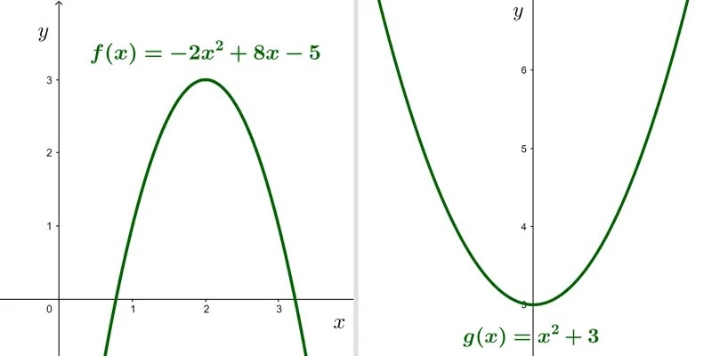
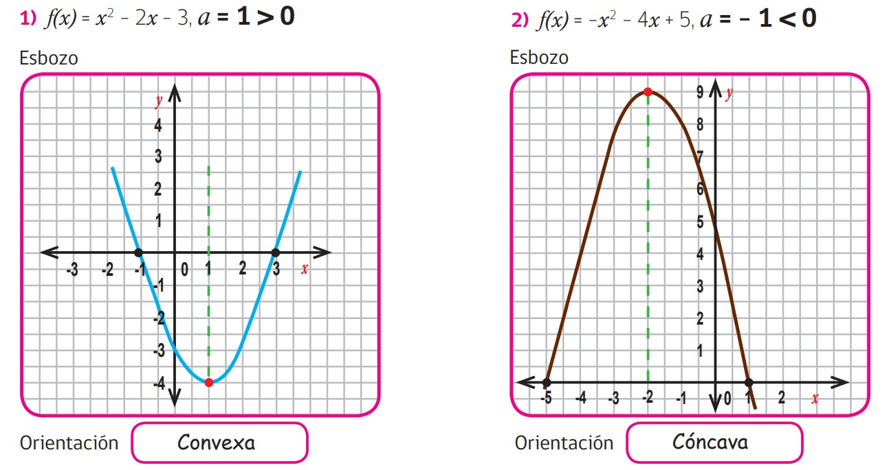

Funciones cuadraticas.
Gráfica de una función cuadrática.
La orientación o concavidad de una parábola.
Como apreciamos, al dibujar la gráfica de la función cuadrática, esta se abre hacia arriba o hacia abajo,
lo que está indicado por el signo del coeficiente a que acompaña a x^2, es decir, dada la función.


Curvatura (video).
Ejemplos.

Obra publicada con Licencia Creative Commons Reconocimiento Compartir igual 4.0